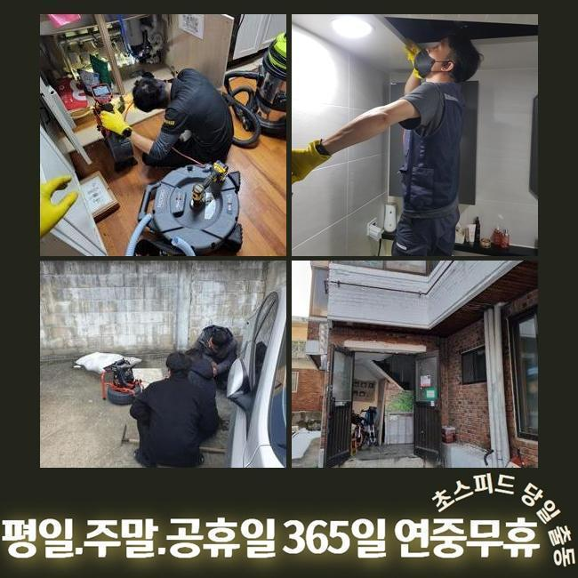
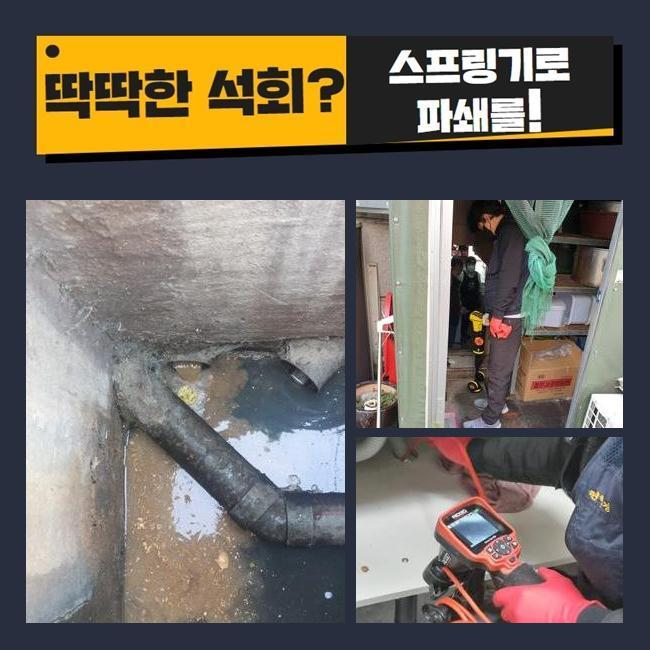
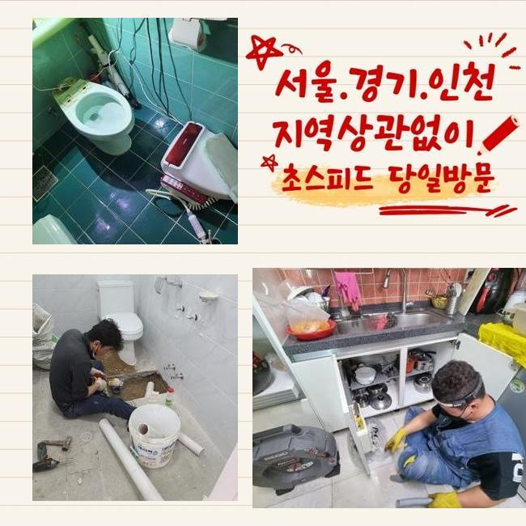
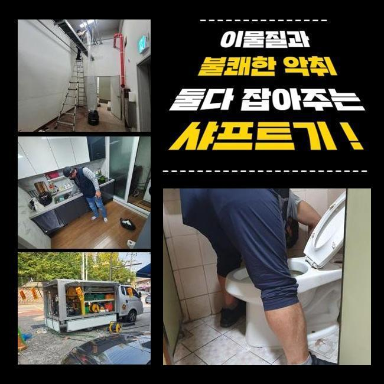
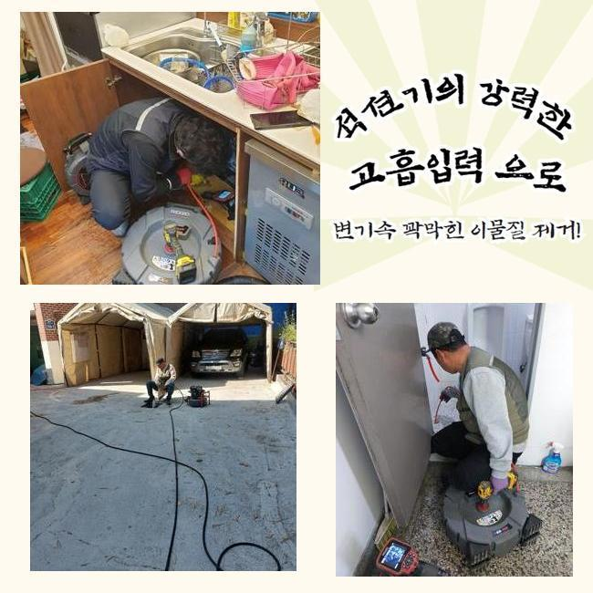
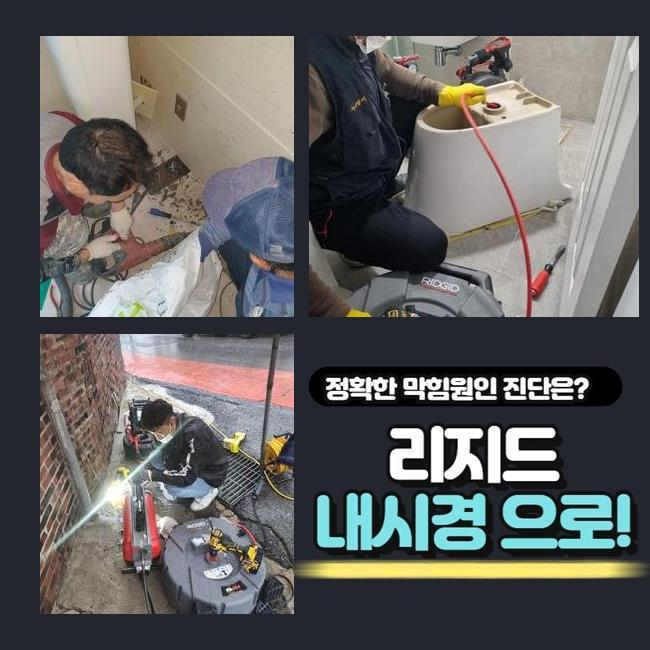

🏠 남동구 장수동세탁기배수구막힘 논현고잔동 배수로뚫기 배관막힘뚫는업체
용인 남동 하수구막힘 전문 시공 후기

📋 작업 개요
- 위치: 용인 남동, 남동, 용인
- 서비스 유형: 하수구막힘, 배관막힘, 집수정막힘, 뚫는업체, 배관청소, 고압세척
- 작업 일시: 2025. 3. 9. 10:39
- 업체명: 하수구수사대 (010-5615-2118)
🔍 문제 상황
남동구 장수동세탁기배수구막힘 논현고잔동 배수로뚫기 배관막힘뚫는업체
얼마전에 고객님 댁에 찾아뵈어 외부에 존재하는 배관을 배수가 가능하도록 만들었습니다
전문성이 뛰어난 장치들을 써서 뒤탈없이 청소하기에 이르렀습니다
통수오류의 결함이 야기된것은 열흘정도라고 하셨는데요
관로들은 통수과정에서 오수들을 따라서 잔해들이 빠지는데 내부에서부터 지속적으로 퇴적이 이뤄지게 되고 각 라인이 막혀요
잔해들의 양들이 많거나 고착화가 이뤄진다면 심해지게될텐데요
이물의 형태에 따라 용해되는것에는 제한이 있어서입니다
이렇게 하수관이 막혀버리는 증세가 생겨나면 보통의 방식으로 해결이 보이지않는 장소가 많은데요
고객님들이 혼자서 보통 떠올리는것은 펑크린이나 베이킹소다 등을 쓰는건데요
증세가 발현되고 시간들이 길게 흐르지않았을때 시도해봄직한 조치겠지만 바깥이라면 개선이 안됩니다
바깥에서 증상이 보이면 자가조치로 시정해보는것이 힘들기에 전문가들의 도움들을 고려하시는게 가장 효과가 좋아요

🔎 원인 분석
💡 전문가 진단: 정밀 진단 장비를 사용하여 슬러지의 고착 여부를 판명하고 타격/세척 작업을 실시했습니다.
전문업체의 해결과정으로서 지금 어떻게 정체된건지 확실한 원인규명은 기본이며 자가조치의 방법관 다르게 빈틈없이 잔해들을 청소해 향후에도 하수도를 문제없이 유지하게끔 만들어드려요
이번 물들이 안내려가는 또한 저희업체에선 적재적소에 맞는 장비들을 활용하여 빈틈없이 찌꺼기또한 제거하여 심부까지 뚫어냈어요
안타깝게도 바깥부분에 자리하고 있는 지점에서 심화된 양상이 나타났고 시정해보는것이 불가하여 내방을 문의하셨죠
저희들은 의뢰자분의 시간들이 괜찮으시면 바로 찾아뵈어 그 날에 작업들을 착수하죠
의뢰를 받은 결과로 문제의스팟은 마당쪽이였어요
단독주택 외부라인에 설치된 수채구멍이 정체를 보이더니 우천상황에서는 넘쳐버리는 상태라고 하셨어요
특히 우천 시 쓰레기들이나 낙엽 등 여러가지의 오염물들이 빠지게됩니다
수도를 이용하면 불현듯 관로로 답답하게 내려가는 상황들이 빈번했다고 해요
초반엔 의뢰자께서는 알아서 나아지겠지 생각하시어 수습을 방관하셨대요
그런데 해결이 늦었던 까닭인지 갑작스럽게 고이면서 안내려갔다고 해요
이후에 며칠의 굉장히 느린 속도로 흘러나가는걸 본 후 얼른 시정해야겠다며 전화하신거였는데요

🔧 작업 과정
마당이 단독으로 있어서 타 세대에게 불편을 끼치진 않았지만 스스로 관리들이 진행되야하는 장소랍니다
빠른 출장이 실시되는 곳들이 잘 보이지 않아 걱정이 앞섰는데 저희업체는 바로 가능하여 의뢰를 바로 하셨어요
저희전문진들은 시기막론하고 휴무에도 작업하며 언제든지 시공하므로 즉시 찾아뵈어 수리에 집중했답니다
배관의 경우 협소하기에 육안으로 들여다보는것에는 제약이 있습니다
각 관로에 내시경장치를 이용해 안보이는 스팟에 오염물질들이 어떤 양상으로 존재하는지 확인합니다
내시경장비로 쌓인 잔해물질들을 어떠한 방식들로 없애주어야하는지 판단되면 실용적인 방식들을 선정합니다
일단은 샤프트장비를 운용하고 집수정쪽은 고압세척기기들을 사용해보기로 판단했어요
샤프트로 말씀드리면 몸체부분과 연결되어있는 라인에 단단한 노커부속품이 달린 모습인데 이 노커부속품이 벽측에 흡착된 이물뭉치들을 탈락시키는 전문기기입니다
상황에 알맞는 기계들을 통하여 안정적으로 문제들을 시정했습니다
작업시에 혹여 작업에 뚫지못한다면 비용청구는 없다고 안내드렸습니다
저희업체는 애초에 해당 장소에 내방하는 경우 출장에 소요되는 비용들을 별도로 청구하지 않은채로 내방하므로 경제적인 부담이 덜하고 작업완료가 안되면 금액들은 발생되지 않으므로 이런 사항도 참고해주세요
방문 시 작업하고 이렇다 할 성과없이 되돌아가며 출장에 소요되는 비용들을 받는 절차들은 없는것을 보장합니다
내방한 장소는 바깥에 위치한 곳들로서 자갈 등도 흘러들어갔었고 누적된 기름성분과 엉키게되며 끈적하게 변하고 돌처럼 굳게 변해버렸어요
구간마다 뭉쳐버려 중심구간에서부터 구멍을 뚫어주었는데요
만성적인 고착이 발생해 일시에 수습되는건 아니었는데 심부라인까지 제거해주어야 했기에 역방향으로 고수압의 장비들을 운용시켜야되는 현상이었습니다
고압세척기기들을 통해서 확실히 세척이 요구되는 상황들이었습니다
내시경장치를 쓰면서 지속적으로 작업을 이어갔지만 물들이 제대로 흐르는 상황들이 아니었습니다
왜냐하면 폐기물과 기름때들이 구간별로 구석까지 축적되어 딱딱해진 상태여서죠


✅ 작업 완료
샤프트장치가 이용되지 못하는 스팟으로 고압노즐분사가 동반되야했답니다
발등에 불이 떨어져 고수압의 기기를 써 고착물들을 배출해내며 연결부분쪽에 흡착된 잔해들을 작게 만들어 청소해주었습니다
빈틈없이 제거하니 조금씩 공간들이 생기고 배수들이 진행되었고 안쪽과 이어진 구간들도 배수절차가 진행되었어요
이와같은 사안들을 의뢰인에게 안내하고 작업들은 끝나게되었죠
동일한 문제들이 야기될 수 없도록 이용해주실때 계속해서 관리해보시고 만일 일년이 지나지않아 반복해서 나타날 경우 저희전문진이 사후관리를 제공해드리니 심려치 마십시오!



⚠️ 하수구 배관 막힘 예방 및 관리 가이드
- ✅ 머리카락, 비닐, 물티슈 등 물에 분해되지 않는 이물질은 하수구 유입을 절대 금지해 주세요.
- ✅ 하수구 거름망을 씌우고 모여진 이물질은 주기적으로 쓰레기통에 바로 비워주셔야 합니다.
- ✅ 배관 노후가 심할 경우 이물질이 더 쉽게 걸리므로 주기적인 배관 세척(고압세척 등)을 권장합니다.
- ✅ 작업 후 1년 이내 재발 시 하수구수사대에서 무상 A/S 보증 서비스를 제공합니다.
💡 핵심 정리
- 확실한 장비 작업(내시경 점검 및 샤프트 스케일링)으로 원인을 뿌리 뽑습니다.
- 작업 후 1년 이내에 동일한 부위 재발 시 100% 무상 A/S 서비스를 보장합니다.
- 서울 · 경기 · 인천 전 지역에 24시간 언제든 긴급 출동할 수 있도록 항시 대기 중입니다.
❓ 자주 묻는 질문 (FAQ)
🚨 용인 남동 하수구막힘 문제로 고민이신가요?
정확한 원인 진단과 확실한 시공으로 재발 없는 해결을 약속드립니다.
24시간 긴급 출동 | 서울 · 경기 · 인천 전지역 | 1년 내 재발 시 무상 A/S